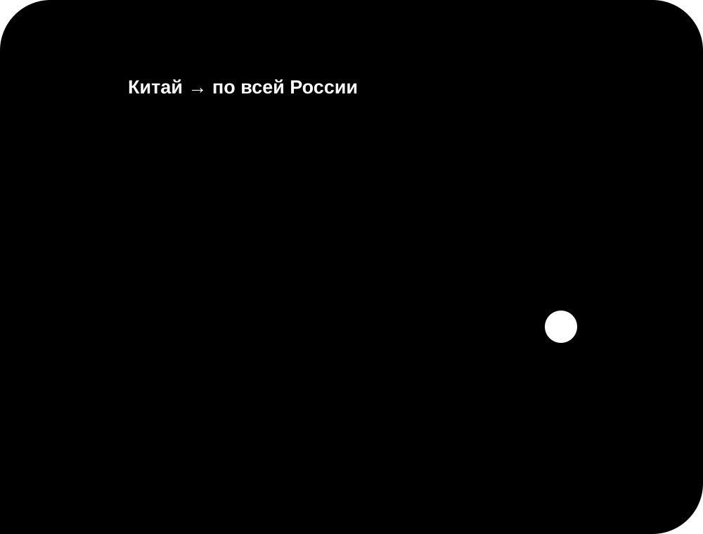

Вы выбираете товар
Пришлите ссылку, фотографию или описание того, что хотите заказать из Китая.
Совместная закупка · Краснодар и Краснодарский край · вся Россия
Вы находите товар на китайской площадке и передаёте его для расчёта. Я помогаю с проверкой предложения, выкупом и доставкой в составе совместной закупки по России. Все условия согласовываются в Telegram или ВК до оплаты.

Простой порядок действий
Вам не требуется самостоятельно разбираться с оплатой на китайской площадке и международной отправкой. Подготовьте ссылку или фотографию товара и присоединитесь к закупке через Telegram либо ВК.
Пришлите ссылку, фотографию или описание в Telegram либо ВК.
Узнайте итоговую стоимость выкупа и доставки до оформления заказа.
Подтвердите товар и условия, после чего я организую выкуп.
Ориентировочный срок доставки — 18–31 день, в зависимости от закупки.
Полезно перед заказом
Каждая позиция учитывается отдельно, хотя товары едут в составе общей отправки. Сначала участник подтверждает параметры и расчёт. Затем организуется выкуп, приём на промежуточной точке и подготовка к перевозке. После прибытия заказы распределяются между участниками. Изменения по конкретной позиции согласовываются через выбранный канал связи.
Покупаем вместе
Каждый участник выбирает свой товар, а организационные этапы объединяются: расчёт, согласование, выкуп и доставка. Так заказать из Китая можно без самостоятельной оплаты на китайской площадке.
Пришлите ссылку, фотографию или описание того, что хотите заказать из Китая.
Проверяю предложение и индивидуально рассчитываю стоимость выкупа и доставки.
После согласования товар добавляется в совместный заказ и выполняется выкуп.
Заказ прибывает в Краснодар и Краснодарский край или отправляется в другой регион России.
Популярные китайские площадки
У каждой площадки свои правила, продавцы и способы оплаты. Перед выкупом я проверяю возможность заказа по вашей ссылке и сообщаю условия. Если прямой доставки в Россию нет, товар можно включить в совместную закупку.
Пришлите ссылку или снимок товара. Я уточню возможность выкупа, цену и условия доставки с Pinduoduo в Россию.
Помогу рассчитать выкуп товара с 1688 и добавить его в общий заказ после согласования стоимости.
Проверим выбранное предложение и рассчитаем заказ с Poizon вместе с доставкой до вашего города.
Отправьте найденный товар, чтобы узнать условия выкупа с Taobao и ориентировочный срок доставки.
Без приблизительных обещаний
Итоговая цена зависит от стоимости товара, веса, объёма, условий продавца и маршрута. Поэтому расчёт совместной покупки и доставки из Китая выполняется индивидуально. До выкупа вы получите информацию по стоимости и ориентировочным срокам.
Ответы перед заказом
Передайте карточку товара или снимок экрана. До оформления я уточню доступность, параметры, стоимость и возможный маршрут доставки.
Возможность выкупа проверяется по выбранной позиции. После проверки вы получите индивидуальный расчёт вместе с доставкой.
Предварительная итоговая стоимость сообщается после получения ссылки, нужных параметров, количества и города доставки.
Я сверяю доступные характеристики, количество и условия продавца. Дополнительные фотографии или проверка обсуждаются для конкретного заказа.
Помощь организатора полезна для оплаты на китайской площадке, согласования позиции и организации перевозки до России.
Искать товары можно на Pinduoduo, 1688, Poizon, Taobao и других доступных площадках. Возможность выкупа уточняется по конкретной ссылке.
Да. Получение доступно в Краснодар и Краснодарский край и других городах России. Назовите населённый пункт при запросе расчёта.
Достаточно ссылки или фотографии, нужных характеристик, количества и города получения. Уточняющие вопросы задаются в Telegram или ВК.
Отправьте ссылку или фотографию в Telegram либо ВК. После проверки предложения вы получите расчёт и сможете подтвердить добавление товара в заказ.
Подробное руководство
До подтверждения закупки важно одинаково понимать характеристики, сроки и последовательность действий. Условия для направления «Краснодар и Краснодарский край» обсуждаются внутри конкретной заявки. Состояние конкретного заказа уточняется в истории сообщений, а не по общей надписи на странице. Необязательно самостоятельно разбираться в оформлении на площадке: начните с отправки ссылки.
Вопросы по позиции решаются до оплаты продавцу, когда ещё можно скорректировать исходную заявку. Для заявки с получением в регионе «Краснодар и Краснодарский край» детали фиксируются отдельно. Перед подтверждением ещё раз сверяются адрес выбранной страницы, параметры, количество и город назначения. Подготовка заявки помогает отделить стоимость предложения от будущих расходов на перевозку.
Итог согласуется до оплаты; участник закупки заранее понимает, какие сведения вошли в оценка расходов. Для заявки с получением в регионе «Краснодар и Краснодарский край» детали фиксируются отдельно. После получения данных я задам только те вопросы, без которых нельзя подготовить расчёт. Вопросы по позиции решаются до выкупа, когда ещё можно скорректировать исходную заявку.
Ориентир по времени составляет 18–31 день, однако фактическое движение зависит от текущего маршрута. Регион «Краснодар и Краснодарский край» учитывается при подготовке индивидуального ответа. До подтверждения закупки важно одинаково понимать характеристики, сроки и последовательность действий. Сравнение имеет смысл проводить для одинаковой комплектации, количества и выбранных характеристик.
Не следует переводить оплату по случайным сообщениям от аккаунтов, не участвовавших в согласовании. При отправке в регион «Краснодар и Краснодарский край» место получения записывается заранее. Количество и параметры записываются до предварительный итога, чтобы не сравнивать разные предложения. Маршрут до Краснодар и Краснодарский край планируется после получения информации о позиции и месте выдачи.
После получения данных я задам только те вопросы, без которых нельзя подготовить оценка расходов. Этот порядок используется для направления «Краснодар и Краснодарский край». Предварительный результат формируется индивидуально: учитываются условия покупки, количество и особенности доставки. Не следует переводить оплату по случайным сообщениям от аккаунтов, не участвовавших в согласовании.
Присоединиться к закупке
Отправьте ссылку или фотографию в Telegram либо ВК. Я рассчитаю стоимость выкупа и доставки.